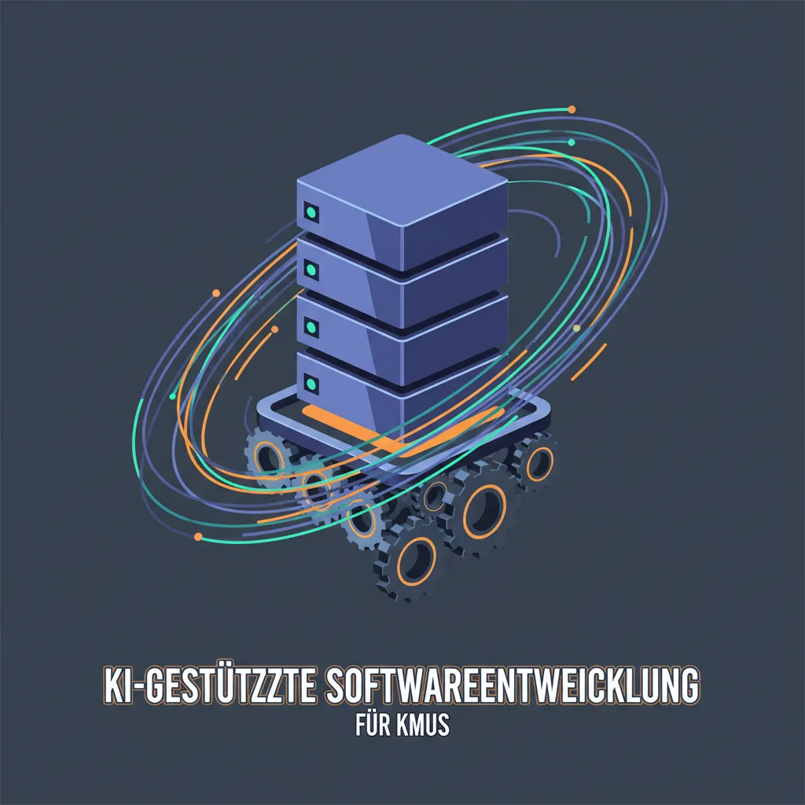
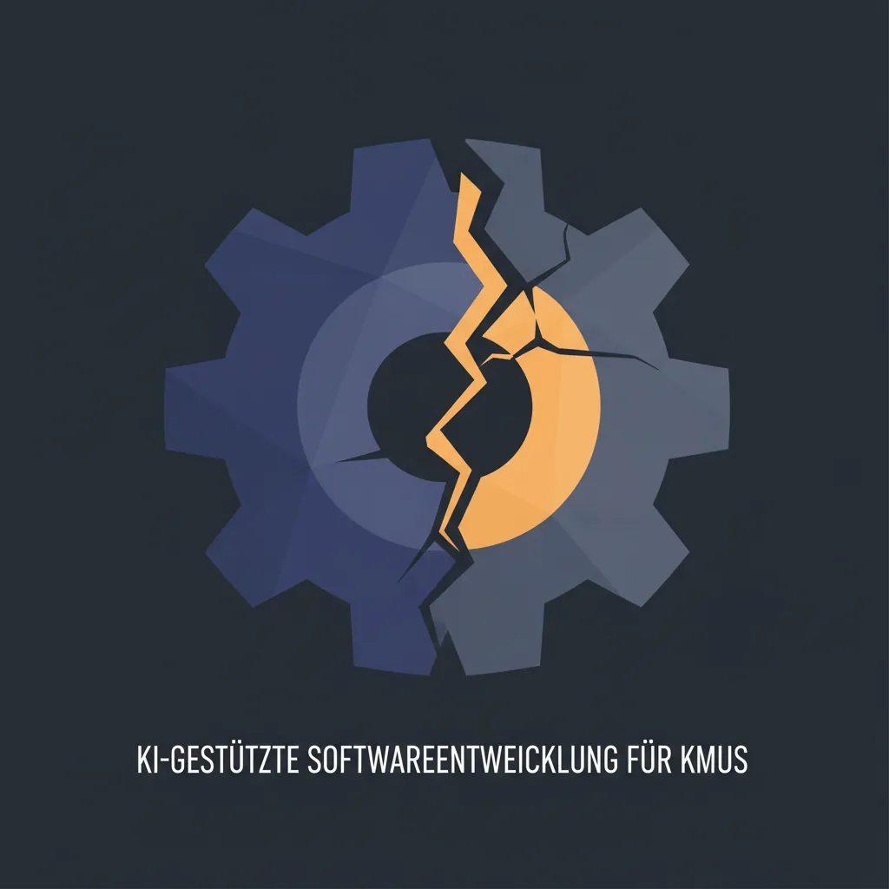
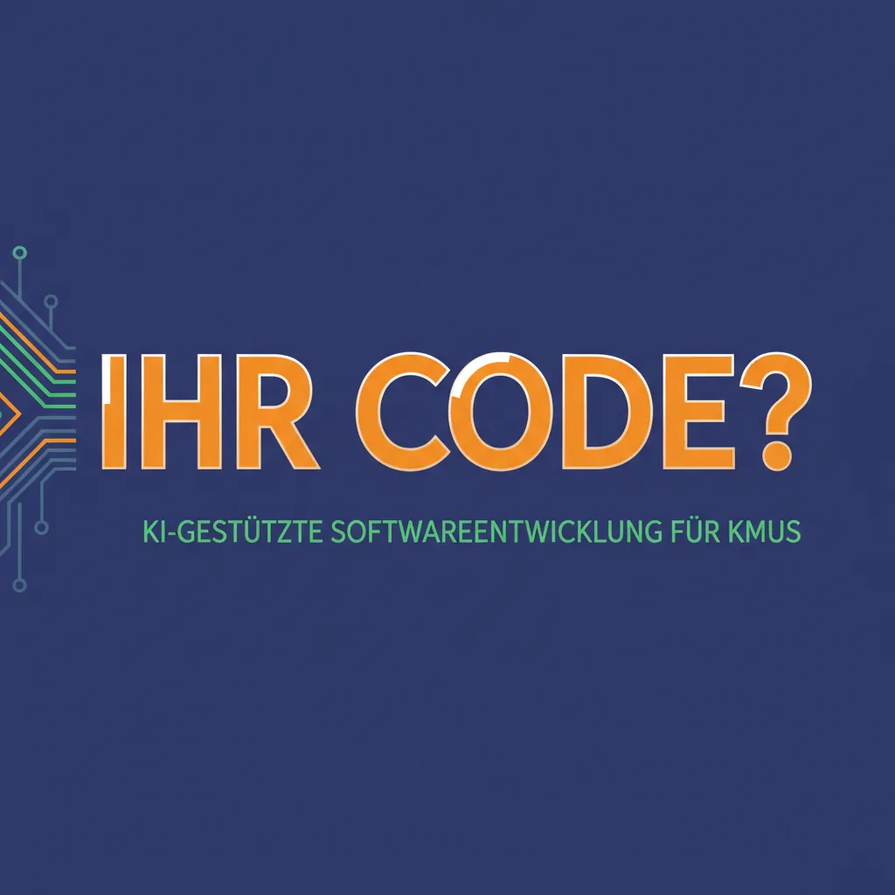
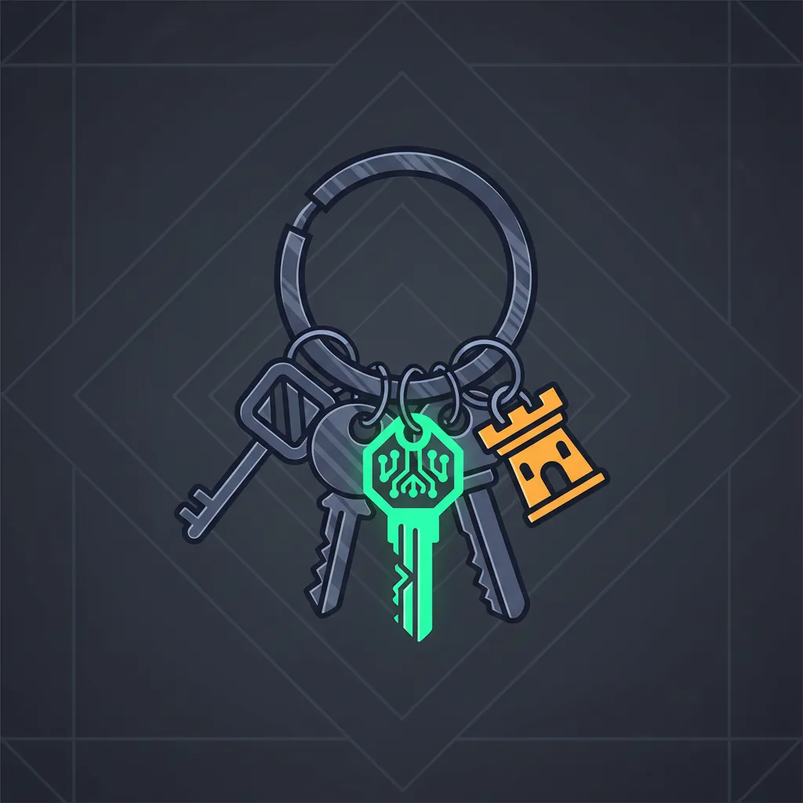

Softwareentwicklung · · 7 Min.
KI-gestützte Softwareentwicklung für KMUs: Was ist 2025 wirklich möglich?
Aus dem Archiv: Dieser Beitrag ist vor über einem halben Jahr erschienen. Manche Zahlen und Produktnamen haben sich seither geändert.

Das Wichtigste in Kürze
- Standardisierte KMU-Software in 2-6 Wochen entwickelbar (3.000-20.000€)
- 84% der Entwickler nutzen KI-Tools – aber nur 29% vertrauen der Ausgabe (Stack Overflow 2025)
- 66% kämpfen mit Lösungen, die "fast richtig, aber nicht ganz" sind
- 72% der Entwickler sagen: "Vibe Coding ist NICHT Teil meiner professionellen Arbeit"
- Österreichische Förderungen decken bis zu 50-80% der Kosten
- Die unterschätzte Frage: Wem gehört der Code am Ende?
"Ich habe gehört, man kann jetzt Websites in Tagen bauen statt Monaten. Stimmt das?"
Eine Frage, die bei KI-Themen häufig aufkommt. Die ehrliche Antwort: Ja und Nein.
Was kann KI-gestützte Entwicklung 2025 wirklich leisten?
Für standardisierte Geschäftsanwendungen ist die Technologie ausgereift. Die Faustregel: Je standardisierter der Prozess, desto besser funktioniert KI-gestützte Entwicklung.
| Anwendungstyp | Machbarkeit | Zeitrahmen |
|---|---|---|
| Kundenverwaltung mit Suche & Export | ✅ Zuverlässig | 2-3 Wochen |
| Online-Terminbuchung mit Kalender-Sync | ✅ Zuverlässig | 2-4 Wochen |
| Einfacher E-Commerce mit Produktkatalog | ✅ Zuverlässig | 4-6 Wochen |
| Reporting-Dashboards | ✅ Zuverlässig | 2-4 Wochen |
| Legacy-System-Integration | ⚠️ Aufwändig | 8-16 Wochen |
| Komplexe B2B-Workflows mit Ausnahmen | ⚠️ Problematisch | Individuell |
Die Realität: Stack Overflow Developer Survey 2025
Der Stack Overflow Developer Survey 2025 mit 49.000+ Entwicklern aus 177 Ländern zeichnet ein ernüchterndes Bild:

| Metrik | 2024 | 2025 | Trend |
|---|---|---|---|
| Entwickler, die KI-Tools nutzen | 76% | 84% | ↑ |
| Vertrauen in KI-Ausgabe | 40% | 29% | ↓↓ |
| Positive Einstellung zu KI | 72% | 60% | ↓ |
| "Fast richtig, aber nicht ganz" | - | 66% | Problem |
| Debugging zeitaufwändig | - | 45% | Problem |
Die zentrale Erkenntnis von Stack Overflow CEO Prashanth Chandrasekar:
"While the adoption of AI tools continues to increase, so does developers' lack of trust in the output of those tools."
Warum der Vertrauensverlust?
Das Hauptproblem, von 66% der Entwickler genannt: KI-Lösungen, die "almost right, but not quite" sind. Das klingt harmlos – ist es aber nicht.
Eine Lösung, die zu 95% richtig ist, kann gefährlicher sein als eine, die offensichtlich falsch ist. Die offensichtlich falsche fällt auf. Die fast richtige schleicht sich durch – und verursacht Probleme, die erst später auftauchen.
45% der Entwickler sagen: Das Debugging von KI-generiertem Code ist zeitaufwändig. In manchen Fällen dauert es länger als das Selberschreiben.
Was Entwickler wirklich über "Vibe Coding" denken
Die Überraschung des Jahres: Stack Overflow fragte explizit nach [Vibe Coding](/blog/vibe-coding-ki-software-kmu-ohne-entwickler) – dem Generieren ganzer Anwendungen aus Prompts.
| Antwort | Anteil |
|---|---|
| "Vibe Coding ist NICHT Teil meiner professionellen Arbeit" | 72% |
| "Emphatic No – auf keinen Fall" | 5% |
| Nutzt Vibe Coding professionell | 23% |
Das heißt: 77% der professionellen Entwickler lehnen Vibe Coding für produktive Arbeit ab.
Das widerspricht nicht meinem [Artikel über Vibe Coding](/blog/vibe-coding-ki-software-kmu-ohne-entwickler). Es bestätigt ihn: Vibe Coding ist ein Werkzeug für bestimmte Anwendungsfälle – nicht ein Ersatz für professionelle Softwareentwicklung.
Wo liegt das Problem – und wo nicht?
Was KI gut kann
Suche nach Antworten: Über 50% der Entwickler nutzen KI primär dafür. KI ist hervorragend darin, Informationen zu aggregieren und Konzepte zu erklären.
Boilerplate-Code: Standardmäßige CRUD-Operationen, repetitive Strukturen, einfache Funktionen – hier spart KI echte Zeit.
Dokumentation und Erklärungen: KI kann Code erklären, dokumentieren und Beispiele generieren.
Was KI (noch) nicht kann
Komplexe Aufgaben: Nur etwa 30% der Entwickler denken, dass KI komplexe Aufgaben gut bewältigt. 40% sagen: schlecht. 17% haben aufgegeben, KI für komplexe Arbeit zu nutzen.
Deployment und Monitoring: 76% der Entwickler planen nicht, KI dafür zu nutzen. Das Risiko ist zu hoch.
Projektplanung: 69% wollen KI nicht für Projektplanung einsetzen.
Wenn es wirklich zählt: 75% der Entwickler würden immer noch einen Menschen fragen, wenn sie der KI-Antwort nicht vertrauen.
Die unterschätzte Frage: Wem gehört der Code?
Hier kommt mein eigentlicher Punkt – und der unterscheidet diesen Artikel von den meisten zum Thema.
Wenn Sie heute mit Cursor AI, v0.dev oder GitHub Copilot entwickeln lassen: Wem gehört der Code am Ende?
| Risiko | Was das bedeutet |
|---|---|
| Cursor AI verdoppelt die Preise | Sie haben keine Alternative |
| v0.dev wird eingestellt | Ihr Tool verschwindet über Nacht |
| OpenAI ändert API-Bedingungen | Ihre Anwendung funktioniert anders |
| Vendor Lock-in | Migration kostet mehr als Neuentwicklung |
Laut Gartner entwickelt etwa ein Drittel der Unternehmen in den nächsten Jahren eigene GenAI-Plattformen – aus Kostengründen und um die Abhängigkeit von SaaS-Anbietern zu reduzieren.
Was das für KMUs konkret bedeutet
- Achten Sie bei der Tool-Auswahl auf Exit-Strategien
- Nutzen Sie wo möglich Open-Source-Alternativen
- Der Code sollte Ihnen gehören – nicht dem Tool, das ihn generiert hat
Es gibt lokale Alternativen wie Ollama mit Continue.dev, die auf Ihrer Hardware laufen. Die Qualität ist nicht ChatGPT-Niveau, aber für viele KMU-Anwendungen ausreichend.
Interessant: Laut Stack Overflow ist Claude Sonnet das "most admired LLM" unter Entwicklern (nach Gemini Reasoning) – und Claude kann lokal mit Ollama-kompatiblen Modellen kombiniert werden.
Mehr dazu: [Die Cloud ist keine Bank, sie ist ein Casino](/blog/cloud-casino-vendor-lock-in-saas-risiko)
Was kostet KI-gestützte Entwicklung?
Realistische Kalkulation ohne Marketing-Versprechen:

| Komplexität | Beispiele | Zeit | Kosten |
|---|---|---|---|
| Einfach | CRM, Terminbuchung | 2-4 Wochen | 3.000-8.000€ |
| Mittel | E-Commerce, Workflow | 4-8 Wochen | 8.000-20.000€ |
| Komplex | Mehrere Systeme, Integrationen | 8-16 Wochen | 15.000-40.000€ |
Diese Zahlen verstehen sich ohne Förderungen.
Welche Förderungen gibt es in Österreich?
| Programm | Förderung | Maximum |
|---|---|---|
| aws AI-Start | 50% | 15.000€ |
| aws AI-Adoption | Variabel | 150.000€ |
| KMU.DIGITAL Beratung | 80% | 1.000€/Thema |
| KMU.DIGITAL Umsetzung | 30% | 6.000€/Unternehmen |
Burgenländische KMUs können durch Kombination oft 70-80% der Projektkosten fördern lassen.
Wichtig: Antragstellung vor Projektbeginn ist zwingend erforderlich.
Was bedeutet der AI Act für KMU-Projekte?
Seit Februar 2025 gilt: Alle Unternehmen, die KI einsetzen, müssen sicherstellen, dass ihre Beschäftigten über ausreichende KI-Kompetenz verfügen.
Typische KMU-Software – Terminbuchung, CRM, einfache Automatisierungen – fällt in die Kategorie "minimales Risiko" und unterliegt kaum speziellen Auflagen.
Wie könnte das in der Praxis aussehen?
Ein typisches Szenario: Ein Handwerksbetrieb verwaltet Kundendaten in Excel. Über 2.000 Zeilen. Die Suche nach Kundenhistorie dauert Minuten, Fehler häufen sich.
Eine mögliche Lösung: Webbasierte Kundenverwaltung mit Suchfunktion, Auftragshistorie und Wartungserinnerungen.
| Aspekt | Realistischer Rahmen |
|---|---|
| Entwicklungszeit | 2-4 Wochen |
| Kosten vor Förderung | 5.000-8.000€ |
| Kosten nach Förderung | 2.000-4.000€ |
| Zeitersparnis | 3-6 Stunden/Woche |
Das System läuft auf Standard-Webhosting, der Code gehört dem Unternehmen.
Wann brauche ich externe Unterstützung?
| Situation | Empfehlung |
|---|---|
| Projekte über 15.000€ | ✅ Externe Unterstützung |
| Integration in bestehende Systeme | ✅ Externe Unterstützung |
| Standardanwendungen unter 8.000€ | ⚠️ Möglicherweise verzichtbar |
| Pilotprojekte mit wenigen Nutzern | ⚠️ Möglicherweise verzichtbar |

Der nächste Schritt
KI-gestützte Entwicklung ist 2025 für österreichische KMUs eine echte Option. Die Technologie ist ausgereift, die Kosten vertretbar, die Förderungen unterstützend.
Die Frage ist nicht, ob KI-gestützte Entwicklung relevant wird – sondern wann und wie Sie einsteigen. Und vor allem: Mit welchen Tools, unter welchen Bedingungen, und wem der Code am Ende gehört.
→ [In 15 Minuten besprechen, was für Ihr Unternehmen Sinn macht](/kontakt)
Weiterführende Artikel
- [Vibe Coding: Software ohne Entwickler?](/blog/vibe-coding-ki-software-kmu-ohne-entwickler) – Was wirklich möglich ist
- [Wem gehören die Daten?](/blog/ki-souveraenitaet-schatten-ki-oesterreich-2025) – Das Souveränitätsproblem
- [Die Cloud ist keine Bank, sie ist ein Casino](/blog/cloud-casino-vendor-lock-in-saas-risiko) – Vendor Lock-in verstehen
Quellen
- Stack Overflow Developer Survey 2025
- Stack Overflow 2025: AI Section
- Stack Overflow Blog: 2025 Survey Results
Armin Fradler begleitet Bildungsorganisationen und Teams beim Umgang mit KI und unterrichtet selbst in der Erwachsenenbildung.